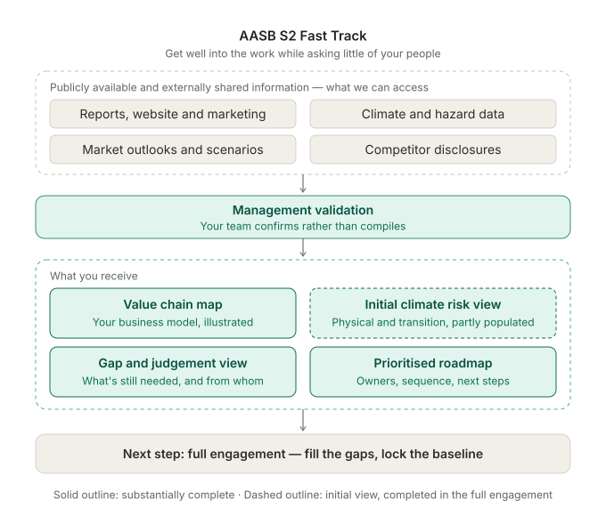

Make the current state visible
Start with what's available. Make the most of publicly available information, validated by your management team, and draw out insights that inform strategy.

CLIMATE DISCLOSURE AASB S2 FAST TRACK
A focused assessment for executives and boards preparing for climate-related disclosure.
Built from publicly available information and validated by your team, so we get well into the work while asking little of your people.
New: Five steps to a confident start on climate reportingTHE QUESTION
Most organisations are not starting from zero. Relevant work often already sits across the business, but it may not yet be visible as the inputs for the disclosure requirements.
The Fast Track establishes a practical shared view: what evidence and controls already exist, where the material gaps and management judgements are, and what should be addressed first.
WHAT THE FAST TRACK DOES
Start with what's available. Make the most of publicly available information, validated by your management team, and draw out insights that inform strategy.
Distinguish missing data, analysis, governance and controls from the management judgements that require deliberate choices.
Maximise the information that is readily available, draw insights from the data that informs strategy.
Set out priorities, ownership, dependencies and the next practical steps toward robust disclosure.

WHAT YOU RECEIVE
Fast Track delivers your business model and value chain as a clear visual map, along with an initial view of the physical and transition climate risks most likely to affect it.
A clear distinction between gaps to address, dependencies to resolve and management decisions that need to be made.
A practical sequence of actions, ownership and next steps, designed for management and board use.
The output is designed to support informed decisions and subsequent implementation. It is not an assurance engagement or a substitute for management accountability.
WHY SIGHTLINES
Start with how the company creates value, then understand how climate-related risks and opportunities affect it.
Commercial, financial, climate value and technology expertise brought together around the same business questions.
Transparent sources, explicit assumptions and clear distinctions between evidence, interpretation, uncertainty and data gaps.
Work that supports choices about governance, strategy, operations, investment, assets and financial performance.
FREE PRACTICAL GUIDE
A plain-English guide to the climate-related disclosure requirements: what they cover, what information is likely to sit across your business already, and how management can begin organising the work.
Built for executives, finance leaders and boards preparing for the first reporting cycle.
Download the AASB S2 disclosure guide (PDF)A practical orientation resource, not legal, accounting or assurance advice.
START A CONVERSATION
Discuss your current position and what a focused Fast Track could clarify for management and the board.
Ask about the AASB S2 Fast Track